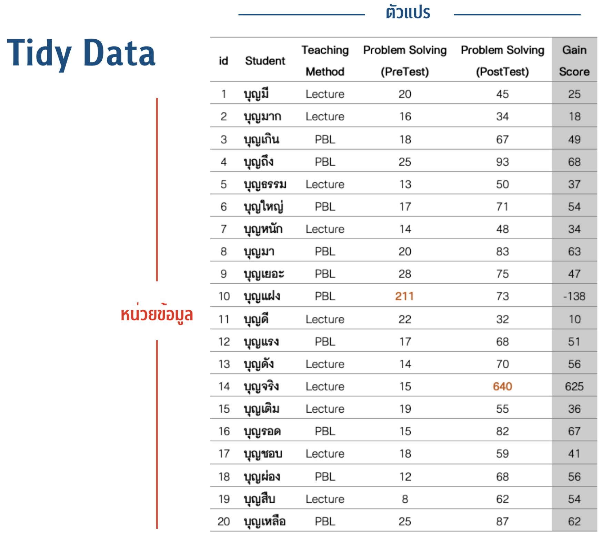

บทที่ 7 ชุดข้อมูล (data frame)
จากข้อจำกัดของเมทริกซ์ในข้างต้นจึงทำให้การใช้เมทริกซ์ในการทำงานที่ประกอบด้วยข้อมูลหลากหลายประเภทไม่ค่อยสะดวกนัก อีกทั้งไม่ได้มีการกำหนดรูปแบบมาตรฐานในการนำเข้าข้อมูลและจัดเก็บไว้ภายในเมทริกซ์ จึงทำให้ในทางปฏิบัติผู้วิเคราะห์สามารถการเก็บข้อมูลภายในเมทริกซ์ได้อย่างหลากหลายลักษณะ ซึ่งหลายลักษณะอาจไม่เหมาะที่จะนำไปวิเคราะห์ข้อมูลได้อย่างมีประสิทธิภาพ
ชุดข้อมูล (data frame) เป็นวัตถุอีกชนิดหนึ่งภายใต้สภาพแวดล้อมของ R ที่ถูกพัฒนาขึ้นให้สามารถเก็บข้อมูลหลากหลายประเภทภายใต้ชุดข้อมูลเดียวกันโดยไม่สูญเสียคุณสมบัติเดิมเหมือนในตัวอย่างที่ผ่านมา ชุดข้อมูลยังมีการกำหนดรูปแบบของตารางจัดเก็บข้อมูลให้อยู่ในรูปแบบข้อมูลจัดระเบียบ (tidy data) ที่เหมาะสำหรับการดำเนินงานด้านการวิเคราะห์ข้อมูล โดยตารางข้อมูลดังกล่าวจำเป็นต้องมีคุณสมบัติ 3 ประการ ประการแรกคือ แต่ละคอลัมน์ของตารางต้องใช้เก็บข้อมูลเพียงตัวแปรเดียวเท่านั้น ประการที่สองคือ แต่ละแถวของตารางต้องใช้เก็บข้อมูลขได้เพียงหน่วยเดียวเท่านั้น และประการที่สามคือ แต่ละเซลล์ของตารางข้อมูลต้องจัดเก็บค่าสังเกตได้เพียงค่าเดียวเท่านั้น (Wickham, 2014) ดังตัวอย่างในรูปด้านล่าง

นอกจากนี้ชุดข้อมูลของ R ยังมีการเก็บรายละเอียดเกี่ยวกับคุณสมบัติของตัวแปรในแต่ละคอลัมน์เป็นข้อมูลเบื้องหลังที่สามารถเรียกดูได้ ประกอบด้วย จำนวนค่าสังเกต จำนวนตัวแปร ชื่อของตัวแปร และประเภทข้อมูลในแต่ละคอลัมน์ ซึ่งคล้ายคลึงกับลักษณะของ spreadsheet ในโปรแกรม SPSS, Minitab, Jamovi หรือโปรแกรมวิเคราะห์ข้อมูลสำเร็จรูปอื่น ๆ การสร้างชุดข้อมูลใน R สามารถทำได้โดยใช้ฟังก์ชัน
data.frame(var1, var2, var3 ,..., varp)
เมื่อ varj คือเวกเตอร์ของตัวแปรตัวที่ j ภายในชุดข้อมูล ยกตัวอย่างเช่น
gender<-c("Male","Female","Male","Male","Female","Male","Male","Female")
age<-c(10,10,11,2,9,4,10,14)
weight<-c(59,35,75,20,63,23,47,59)
height<-c(142,135,150,95,141,108,142,155)
dat<-data.frame(gender, age, weight, height)
dat
## gender age weight height
## 1 Male 10 59 142
## 2 Female 10 35 135
## 3 Male 11 75 150
## 4 Male 2 20 95
## 5 Female 9 63 141
## 6 Male 4 23 108
## 7 Male 10 47 142
## 8 Female 14 59 155สังเกตว่าชุดข้อมูล dat ในข้างต้นมีความแตกต่างจากเมทริกซ์ mat3 ที่ผ่านมา โดยในเบื้องต้นจะเห็นได้ชัดว่าสมาชิกใน dat ไม่ได้อยู่ภายใต้เครื่องหมาย " " ซึ่งแสดงว่า ข้อมูลอายุ น้ำหนัก และส่วนสูงของนักเรียนในชุดข้อมูลดังกล่าวไม่ใช่ตัวอักษร ซึ่งเมื่อนำมาดำเนินการทางคณิตศาสตร์ เช่น นำมาคำนวณค่า bmi จะเห็นว่าสามารถคำนวณได้และมีผลลัพธ์ดังนี้
bmi<-dat[,3]/(dat[,4]/100)^2
bmi
## [1] 29.26007 19.20439 33.33333 22.16066 31.68855 19.71879 23.30887 24.55775เมื่อสร้างตัวแปร bmi แล้วยังสามารถนำตัวแปร bmi กลับไปจัดเก็บในชุดข้อมูลได้โดยใช้คำสั่งต่อไปนี้
dat$bmi<-bmi
dat
## gender age weight height bmi
## 1 Male 10 59 142 29.26007
## 2 Female 10 35 135 19.20439
## 3 Male 11 75 150 33.33333
## 4 Male 2 20 95 22.16066
## 5 Female 9 63 141 31.68855
## 6 Male 4 23 108 19.71879
## 7 Male 10 47 142 23.30887
## 8 Female 14 59 155 24.55775นอกจากนี้ยังสามารถเรียกดูรายละเอียดของชุดข้อมูลเพื่อตรวจสอบลักษณะโครงสร้างของชุดข้อมูลที่สร้างขึ้นได้ด้วยฟังก์ชัน str() ฟังก์ชันดังกล่าวจะแสดงรายละเอียดเกี่ยวกับ จำนวนค่าสังเกต จำนวนตัวแปร รายชื่อของตัวแปรที่เก็บอยู่ในแต่ละคอลัมน์ของชุดข้อมูล และประเภทของข้อมูลในแต่ละคอลัมน์ ดังตัวอย่างต่อไปนี้
str(dat)
## 'data.frame': 8 obs. of 5 variables:
## $ gender: chr "Male" "Female" "Male" "Male" ...
## $ age : num 10 10 11 2 9 4 10 14
## $ weight: num 59 35 75 20 63 23 47 59
## $ height: num 142 135 150 95 141 108 142 155
## $ bmi : num 29.3 19.2 33.3 22.2 31.7 ...การอ้างอิงสมาชิกในชุดข้อมูล
การอ้างอิงหรือคัดกรองสมาชิกภายในชุดข้อมูลามารถทำได้หลายวิธี ;วิธีการหนึ่งคือการอ้างอิงแบบเมทริกซ์เหมือนกับที่ได้กล่าวไว้ในหัวข้อของเมทริกซ์ เช่น
dat[1:3,1]
## [1] "Male" "Female" "Male"
dat[1:3,2]
## [1] 10 10 11
dat[4:8,3:4]
## weight height
## 4 20 95
## 5 63 141
## 6 23 108
## 7 47 142
## 8 59 155
dat[4:8,]
## gender age weight height bmi
## 4 Male 2 20 95 22.16066
## 5 Female 9 63 141 31.68855
## 6 Male 4 23 108 19.71879
## 7 Male 10 47 142 23.30887
## 8 Female 14 59 155 24.55775
อีกวิธีการหนึ่งคือการอ้างอิงข้อมูลจากชื่อคอลัมน์หรือชื่อของตัวแปร โดยการพิมพ์คำสั่งที่มีรูปแแบบดังนี้ dataframe$var_name เมื่อ dataframe คือชุดข้อมูล และ var_name คือชื่อของตัวแปรในชุดข้อมูล เช่น
dat$age
## [1] 10 10 11 2 9 4 10 14
dat$weight
## [1] 59 35 75 20 63 23 47 59
dat$gender[1:5]
## [1] "Male" "Female" "Male" "Male" "Female"ตัวแปรแบบจัดประเภท (catergorical variables)
ในเชิงสถิติอาจจำแนกตัวแปรออกเป็น 2 ประเภทใหญ่ ตามลักษณะของค่าสังเกตในตัวแปร ได้แก่ ตัวแปรเชิงปริมาณ (quantitative variables) และตัวแปรจัดประเภท (categorical variables) การเก็บค่าสังเกตของตัวแปรเชิงปริมาณในโปรแกรม R จะเก็บอยู่ในรูปของตัวแปรตัวเลข (numeric variables) ส่วนการเก็บข้อมูลค่าสังเกตของตัวแปรจัดประเภทใน R สามารถทำได้หลายรูปแบบมากกว่า วิธีการที่ง่ายที่สุดคือการเก็บข้อมูลจัดประเภทในตัวแปรตัวอักษร เช่น การเก็บข้อมูลเพศของนักเรียนจำนวน 8 คน สามารถเขียนคำสั่งให้จัดเก็บในเวกเตอร์ตัวอักษรได้ดังนี้
gender<-c("Male","Female","Male","Male","Female","Male","Male","Female")อย่างไรก็ตามการเก็บข้อมูลตัวแปรจัดประเภทใน R ในรูปแบบของตัวแปรตัวอักษรข้างต้น ยังมีข้อจำกัดในการนำไปวิเคราะห์ข้อมูล ทั้งนี้เป็นเพราะผู้วิเคราะห์ไม่สามารถป้อนข้อมูลตัวอักษรเข้าไปวิเคราะห์ในโมเดลเชิงสถิติได้โดยตรง ซึ่งทำให้ก่อนการวิเคราะห์ผู้วิเคราะห์จำเป็นต้องแปลงค่าสังเกตของตัวแปรจัดประเภทดังกล่าวให้อยู่ในรูปแบบของตัวแปรตัวเลข เช่น ตัวแปรแบบ dummy ที่มีการให้คะแนนแบบ 0, 1 ดังนี้
กำหนดให้ \(X\) เป็นตัวแปรจัดประเภทที่ค่าสังเกตมีความเป็นไปได้ \(k\) ระดับ แล้วจะได้ว่าตัวแปร dummy สำหรับเป็นตัวแทนของตัวแปรจัดประเภทดังกล่าว จะมีจำนวนทั้งสิ้น \(k-1\) ตัวแปร ยกตัวอย่างเช่น จากตัวแปร gender ข้างต้น หากกำหนดให้ d.male<-1 เมื่อ gender == "Male" และ d.male<-0 เมื่อ gender == "Female" จะสามารถสร้างตัวแปร d.male เพื่อเก็บข้อมูลเพศใน R ได้ดังนี้
d.male<-c(1,0,1,1,0,1,1,0)
d.male## [1] 1 0 1 1 0 1 1 0if/else function
นอกจากการป้อนข้อมูลรหัสของตัวแปร dummy เข้าสู่โปรแกรม R โดยตรงดังในตัวอย่างข้างต้นแล้ว หากผู้ใช้สามารถแปลงข้อมูลจากตัวแปรตัวอักษรที่มีอยู่แล้วให้เป็นตัวแปร dummy ด้วยการใช้ฟังก์ชันการตัดสินใจแบบกำหนดเงื่อนไข (if/else) ฟังก์ชันดังกล่าวมี pseudo-algorithm แสดงดังรูปด้านล่าง ซึ่งจะเห็นว่าขั้นตอนการทำงานของฟังก์ชันดังกล่าว เริ่มจากการกำหนดเงื่อนไขการทดสอบ (test condition) สำหรับตรวจสอบข้อมูลที่นำเข้ามาว่าเป็นไปตามเงื่อนไขที่กำหนดไว้หรือไม่ หากเป็นจริงตามเงื่อนไขให้ดำเนินการประมวลผลตามคำสั่งที่กำหนดไว้ใน statement 1 ในทางกลับกันหากไม่เป็นจริงตามเงื่อนไข ให้ดำเนินการประมวลผลตามคำสั่งใน statement 2
ในโปรแกรม R สามารถดำเนินการ algorithm ข้างต้นได้โดยใช้ฟังก์ชัน ifelse() ที่มีรูปแบบการเขียนคำสั่งดังนี้
ifelse(condition, statement1, statement2)
ตัวอย่างต่อไปนี้แสดงการใช้คำสั่ง ifelse() ข้างต้น เพิื่อแปลงข้อมูล ตัวแปร gender ที่จัดเก็บในรูปแบบตัวแปรตัวอักษรให้เป็นตัวแปรตัวเลขแบบ dummy
d.male<-ifelse(gender=="Male",1,0)
d.male
## [1] 1 0 1 1 0 1 1 0อีกตัวอย่างหนึ่ง หากกำหนดให้ method เป็นตัวแปรใน R สำหรับเก็บข้อมูลวิธีการสอนที่นักเรียนจำนวน 12 คนได้รับ ดังนี้
method<-c("LEC","LEC","LEC", "PBL", "PBL", "PBL", "COP", "COP", "COP", "DEM", "DEM", "DEM")โดยที่ วิธีการสอนดังกล่าวมีทั้งหมด 4 วิธีการได้แก่ วิธีการสอนแบบบรรยาย (LEC) โครงงาน (PBL) ร่วมมือ (COP) และสาธิต (DEM) และ หากกำหนดให้้วิธีการสอนแบบบรรยายเป็นระดับอ้างอิง (reference level) ในการสร้างตัวแปร dummy จะได้ว่า ตัวแปร dummy สำหรับวิธีการสอนข้างต้น จำเป็นต้องม่ีทั้งสิ้น 3 ตัวแปร ได้แก่ d.PBL, d.COP และ d.DEM โดยการสร้างตัวแปร dummy ข้างต้นใน R อาจเขียนคำสั่งเป็นดังนี้
d.PBL<-ifelse(method=="PBL",1,0)
d.COP<-ifelse(method=="COP",1,0)
d.DEM<-ifelse(method=="DEM",1,0)
data.frame(d.PBL,d.COP,d.DEM)
## d.PBL d.COP d.DEM
## 1 0 0 0
## 2 0 0 0
## 3 0 0 0
## 4 1 0 0
## 5 1 0 0
## 6 1 0 0
## 7 0 1 0
## 8 0 1 0
## 9 0 1 0
## 10 0 0 1
## 11 0 0 1
## 12 0 0 17.0.1 ตัวแปร factor
การเก็บข้อมูลของตัวแปรจัดประเภทในลักษณะของตัวแปรตัวอักษร มักมีข้อจำกัดคือนำไปใช้ในการวิเคราะห์ข้อมูลต่อได้ยาก ซึ่งโดยปกติแล้วผู้วิเคราะห์จะแปลงข้อมูลของตัวแปรจัดประเภทดังกล่าวให้เป็นตัวแปรแบบ dummy ก่อนการวิเคราะห์ อย่างไรก็ตามการเก็บข้อมูลเป็นตัวเลขแบบ 0, 1 โดยที่ไม่มีรายละเอียดหรือ label กำกับค่าของตัวเลขดังกล่าวทำให้ในเชิงปฏิบัติที่ชุดข้อมูลประกอบด้วยตัวแปรจำนวนมาก อาจเกิดความไม่สะดวกและเป็นอุปสรรคของผู้วิเคราะห์ในการทำความเข้าใจข้อมูล นอกจากนี้ในกรณีของตัวแปรจัดประเภทที่ค่าสังเกตมีความเป็นไปได้มากกว่าสองค่า จำเป็นต้องสร้างตัวแปร dummy จำนวนมากขึ้น ทำให้การแปลงค่าสังเกตของตัวแปรจัดประเภทให้เป็นตัวแปร dummy ด้วยการใช้ฟังก์ชัน ifelse() แบบในข้างต้นไม่สะดวก
มีอีกวิธีการหนึ่งใน R ที่มีประสิทธิภาพมากกว่าคือ การใช้ตัวแปร factor เพื่อจัดเก็บข้อมูลแบบจัดประเภท ตัวแปรประเภทนี้มีลักษณะเด่นคือ จัดเก็บค่าสังเกตของตัวแปรจัดประเภทในรูปแบบการใช้ตัวเลขจำนวนเต็ม 1, 2, 3, …, k โดยที่ตัวเลขดังกล่าวใช้แทนระดับของตัวแปรจัดประเภท และสามารถบันทึก label ของตัวเลขที่ให้แทนระดับของตัวแปรดังกล่าวซึ่งทำให้ง่ายในการทำความเข้าใจข้อมูลหรือผลการวิเคราะห์มากกว่าการใช้ตัวแปร dummy นอกจากนี้ฟังก์ชันส่วนใหญ่ที่ใช้ในการวิเคราะห์ข้อมูลของ R รองรับการวิเคราะห์ตัวแปรจัดประเภทที่เก็บอยู่ในรูปของตัวแปร factor ทำให้ในกระบวนการของการวิเคราะห์ฟังก์ชันส่วนใหญ่จะแปลงตัวแปร factor ดังกล่าวเป็นตัวแปร dummy ให้โดยอัตโนมัติ การสร้างตัวแปร factor ใน R สามารถทำได้โดยใช้ฟังก์ชัน factor() ที่มีรูปแบบการเขียนคำสั่งดังนี้
factor(x, levels, labels)
เมื่อ x คือเวกเตอร์ที่เก็บค่าสังเกตของตัวแปรจัดประเภท levels คืออาร์กิวเมนท์กำหนดการจัดเรียงระดับของตัวแปรจัดประเภท และ labels คืออาร์กิวเมนท์กำหนดความหมาย (label) ให้กับระดับของตัวแปร โดยอาร์กิวเมนท์ทั้งหมดเป็นไปได้ทั้งเวกเตอร์ตัวเลข และเวกเตอร์ตัวอักษร
ในการใช้งานจริงผู้วิเคราะห์ไม่จำเป็นต้องระบุอาร์กิวเมนท์ทั้งสามตัวข้างต้นพร้อมกันเสมอไป ทั้งนี้ขึ้นอยู่กับความเหมาะสม ยกตัวอย่างเช่น หากต้องการแปลงเวกเตอร์ตัวอักษร method ให้เป็นตัวแปรแบบ factor สามารถทำได้ง่าย โดยการเขียนคำสั่งดังนี้
method.fac<-factor(method)
method.fac## [1] LEC LEC LEC PBL PBL PBL COP COP COP DEM DEM DEM
## Levels: COP DEM LEC PBLหากไม่ได้มีการกำหนดอาร์กิวเมนท์อื่น ๆ เพิ่มเติม ฟังก์ชัน factor() จะกำหนดลำดับของระดับตัวแปรจัดประเภทให้โดยอัตโนมัติ โดยเรียงลำดับตามลำดับของตัวอักษร ในกรณีที่ลำดับดังกล่าวไม่สอดคล้องกับธรรมชาติของตัวแปรผู้วิเคราะห์สามารถปรับเปลี่ยนลำดับดังกล่าวได้โดยการระบุอาร์กิวเมนท์ levels เพิ่มเติม เช่นหากต้องการกำหนดให้วิธีสอนแบบบรรยาย (LEC) อยู่ในลำดับแรกของระดับค่าสังเกตของตัวแปร สามารถเขียนคำสั่งได้ดังนี้
method.fac<-factor(method.fac, levels=c("LEC","PBL", "COP","DEM"))
method.fac## [1] LEC LEC LEC PBL PBL PBL COP COP COP DEM DEM DEM
## Levels: LEC PBL COP DEMนอกจากนี้ยังสามารถเปลี่ยนแปลง label ของระดับตัวแปรได้ด้วยการระบุอาร์กิวเมนท์ labels เพิ่มเติม เช่น
method.fac<-factor(method.fac,
labels=c("LECTURE",
"PROJECT",
"COOPERATE",
"DEMONSTRATE"))
method.fac## [1] LECTURE LECTURE LECTURE PROJECT PROJECT PROJECT
## [7] COOPERATE COOPERATE COOPERATE DEMONSTRATE DEMONSTRATE DEMONSTRATE
## Levels: LECTURE PROJECT COOPERATE DEMONSTRATE